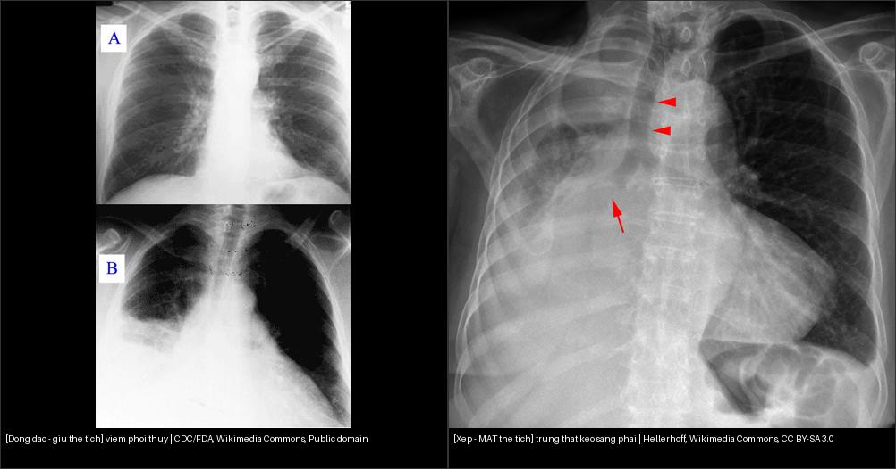

001 — Tổng quan hệ Ngực / Chest overview
Tags: tong-quan
Mức chắc chắn (certainty): tổng hợp y văn (literature synthesis) — cập nhật sau đợt 041/031/033 (7 bài ngực).
Trục chính của hệ Ngực — học thuyết thể tích (volume-loss doctrine)
- Đông đặc (consolidation): tổn thương THAY khí trong phế nang nhưng GIỮ thể tích → không di lệch rãnh liên thùy/trung thất; thường có phế quản hơi (air bronchogram).
- Xẹp (atelectasis): mất khí + MẤT thể tích → rãnh liên thùy, trung thất và cơ hoành bị KÉO về phía tổn thương (dấu chốt duy nhất); phế quản hơi có thể mất khi tắc trung tâm hoàn toàn.
- Gợi ý nhanh: bờ phổi tạng tách thành ngực 1–2 mm hoặc thấy đường màng phổi = tràn khí; meniscus khác nhau trên 2 bình diện = tràn dịch; mờ giới hạn theo rãnh + dấu silhouette = viêm thùy giữ thể tích.

Trái: viêm phổi đông đặc — tổn thương gây mờ nhưng KHÔNG kéo trung thất/rãnh (giữ thể tích). Phải: xẹp gần toàn bộ phổi phải — trung thất KÉO SANG PHẢI (mất thể tích). Nguồn: CDC/FDA (Public domain) + Hellerhoff (CC BY-SA 3.0). Ảnh ghép letterbox.Bảng so sánh phân biệt bắt buộc (hệ Ngực)
| Mẫu hình (pattern) | Vị trí (location) | Gamut chính (DDx) | Phân biệt nhanh | Bài chi tiết |
|---|---|---|---|---|
| Nốt (nodule) | Phổi (lung) | U hạt (granuloma), ung thư (cancer), hamartoma | Bờ gai (spiculation), kính mờ (ground-glass) | 020 |
| Nốt/hạch nội phổi (cạnh rãnh) | Rốn & nội phổi | Hạch nội phổi (IPLN/PFN), K phổi, di căn cạnh rãnh | Tam giác + dính rãnh = lành; bờ gai + khấc + to lên = ác | 013 |
| Nốt đơn độc + tiền sử K ngoài phổi | Phổi | Di căn đơn độc vs K phổi nguyên phát thứ hai (SPLC) | SUVmax không phân biệt (BCM 6,47 vs PLC 2,98); gai + múi + co kéo → nguyên phát (mổ) | 016 |
| Dày vách liên tiểu thùy | Mô kẽ/vách | Bạch mạch lan phổi (PLC), phù phổi, sarcoid, xơ UIP | Dạng nốt = PLC (M1a); trơn đối xứng + tim to + Kerley B = phù | 017 |
| Đông đặc (consolidation) | Phổi | Viêm phổi (pneumonia), nhồi máu phổi (pulmonary infarction), ung thư lepidic (lepidic adenocarcinoma) | Phế quản hơi (air bronchogram), giữ thể tích | 030 |
| Xẹp (atelectasis) | Phổi | Tắc (obstruction), chèn ép (compression) | Di lệch rãnh liên thùy (fissure) | 030 |
| Tràn dịch (effusion) | Màng phổi (pleura) | Dịch thấm (transudate), dịch tiết (exudate), máu (hemothorax) | Meniscus, tư thế nằm (decubitus) | 040 |
| Tràn dịch dưỡng trấp (chylothorax) | Màng phổi | Rò ống ngực sau mổ/chấn thương, lymphoma, bẩm sinh, LAM; pseudochylothorax | TG > 110 mg/dL + chylomicron = chylothorax; cholesterol > 200 + tinh thể = pseudochylothorax (không thắt ống ngực) | 079 |
| Tràn dưỡng trấp + tiêu xương/nang lách | Màng phổi + xương + lách | GLA, GSD (Gorham–Stout), KLA, CCLA | Tiêu xương vỏ tiến triển = GSD; nhiều ổ ly giải tủy + nang lách = GLA; tràn dịch xuất huyết + tiểu cầu 50.000–100.000/µL = KLA; chỉ giãn ống bạch huyết trung tâm = CCLA | 077 |
| Phổi sau cắt thùy (hậu phẫu) | Phổi còn lại | Giãn bù sinh lý, tồn lưu dị dạng, tắc nghẽn phế quản, biến dạng thành ngực – vẹo cột sống | Trung thất dịch về bên mổ + mạch máu đều = giãn bù; nang/nốt mới = tồn lưu; thể tích giảm = xẹp | 049 |
| Thất bại liền mỏm phế quản (rò khí – màng phổi) | Mỏm phế quản + khoang màng phổi | Rò trung tâm sớm (lỗi cơ học), rò trung gian (thiếu máu/nhiễm), rò muộn (xơ – mủ mạn), rò ngoại vi | Mức dịch TỤT/khí TĂNG sau giai đoạn ổn định + khuyết mỏm ≥ 2 mặt phẳng; ≥ 5 mm đổi chiến lược, > 10 mm/tách rộng → mổ | 3108 |
| Bất đối xứng thành ngực – vẹo sau mổ ngực | Thành ngực – cột sống ngực | Vẹo do mổ ngực (thoracogenic), dính sườn, thiểu sản sườn, pectus, vẹo bẩm sinh/vô căn | Dính sườn + thiểu sản sườn cùng bên + KHÔNG dị tật đốt sống = do mổ; Cobb > 10° = vẹo; cong ngực trái ở trẻ lớn = cờ đỏ → MRI tủy | 047 |
| Tràn khí (pneumothorax) | Màng phổi (pleura) | Tự phát (spontaneous), chấn thương (trauma), áp lực (tension) | Đường màng phổi + vô mạch; nằm ngửa tìm deep sulcus | 041 |
| Lồng ngực không đủ thể tích (TIS) | Thành ngực – cột sống | Jeune, STD/Jarcho–Levin, dính sườn, SMA sườn dù, EOS nặng | SAL < 90% + T1–T12 thấp hơn tuổi + FVC/AVR giảm = TIS**; Cobb ổn định KHÔNG loại trừ; **gù > 70° → tránh VEPTR | 048 · 043 |
| Nước tiểu trắng như sữa | Đường niệu – bạch huyết | Dưỡng trấp niệu (sán chỉ, loạn sản mạch bạch huyết, sau mổ), phosphaturia, pyuria, lipiduria | Chylomicron niệu > 15 mg/dL = dưỡng trấp; mức mỡ–dịch trong bàng quang = gần đặc hiệu; trong lại sau thêm acid = phosphaturia | 076 |
| Viêm thùy (lobar pneumonia) | Phổi | Phế cầu (pneumococcus), nhồi máu (infarction), xuất huyết | Phế quản hơi + giới hạn rãnh, không mất thể tích | 031 |
| Viêm đa ổ (multifocal) | Phổi | Tụ cầu (staph), gram âm, hít (aspiration), lao | Nốt/đám 2 bên + hang + tree-in-bud | 031 |
| Phù lan tỏa (edema/ARDS) | Phổi | Tim (cardiogenic), ARDS, xuất huyết (DAH), virus | Kerley B + tim to + tan nhanh = phù tim; ngoại vi + tim thường = ARDS | 033 |
| Mờ kính lan tỏa + đông đặc phụ thuộc sau thủ thuật thẩm mỹ | Phổi + mô dưới da vùng tiêm | Tắc mạch silicone (SES) · tắc mạch mỡ · ARDS nhiễm trùng · phù tim · DAH · PE | Tiêm silicone lỏng 0–72 giờ + GGO đối xứng + CT vùng tiêm có dày mỡ/khí dưới da = SES; CTPA âm tính không loại trừ (bệnh vi mạch); CT sớm có thể bình thường | 1698 |
| Khuyết thuốc trong động mạch phổi sau chấn thương hoặc hút mỡ | Động mạch phổi | Tắc mạch mỡ (FES) · thuyên tắc phổi (PE) · tắc mạch silicone · tắc khí · mảnh tủy xương | CT KHÔNG cản quang: đậm độ âm −50 đến −97 HU = mỡ (huyết khối dương ~30–50 HU); CTPA làm mỡ gần đồng đậm → chỉ còn khuyết thuốc mềm; kèm GGO hai bên và MRI não "starfield" (DWI sáng/ADC tối, SWI vi xuất huyết) | 1800 |
| Hang (cavity) | Phổi | Lao (TB), K hoại tử (SCC), áp-xe (abscess), nấm (aspergilloma) | Thành ≤ 4 mm lành / > 15 mm ác; liềm khí + di động = nấm | 025 |
| Xơ mô kẽ (fibrosis) | Phổi | UIP/IPF, NSIP, HP mạn | Tổ ong đáy-dưới màng phổi = UIP; chừa màng phổi 1–2 mm = NSIP | 035 |
| Giãn PQ/kén khí | Đường thở | Giãn PQ, LCH, LAM, khí phế thũng | Nhẫn ngọc > 1,0; kén ≤ 2 mm; central dot = khí phế thũng | 050 |
| Giãn PQ thùy giữa/lưỡi hai bên + tree-in-bud | Đường thở (đa thùy) | NTM-PD (MAC/M. abscessus) · lao · giãn PQ hậu nhiễm · CPA | Giãn PQ giữa/lưỡi đối xứng + nốt 2–5 mm + tree-in-bud = NTM; KHÔNG giãn PQ + co kéo đỉnh = lao (OR 0,19); chốt bằng ≥ 2 đờm hoặc 1 BAL | 056 |
| Nang phổi lan toả hai bên | Phổi (mọi vùng) | LAM, BHD, PLCH, LIP, di căn dạng nang, nang lão hoá | Tròn đều–mọi vùng = LAM; đáy–bất quy tắc–≥ 2,1 cm = BHD; đỉnh + nốt = PLCH; < 4 nang thường lành | 696, 697 |
| Một thùy tăng sáng | Phổi (một thùy) | Hẹp phế quản bẩm sinh, CLH, CPAM, Swyer–James, dị vật | Bronchocele + ứ khí = BA; thùy căng, không bronchocele = CLH; phổi nhỏ + giãn PQ = Swyer–James | 699, 698 |
| Khối trung thất | ITMIG 3 khoang | Thymoma, tăng sản, u quái, lymphoma, u thần kinh | SII > 20% = tăng sản; mỡ+vôi = u quái; bao mạch không tắc = lymphoma | 060 |
| Khuyết thuốc mạch | ĐMP/ĐMC | PE cấp/mạn, sarcoma, bóc tách, IMH, PAU | Góc nhọn = cấp; flap+2 lòng = bóc tách; liềm 50–70 HU = IMH | 070 |
| Ho ra máu tái diễn + khối/khí cạnh ĐMC ngực | Trung thất – ĐMC xuống – phế quản trái | Rò ĐMC–phế quản · rò ĐMC–thực quản · giả phình Rasmussen · phình ĐM phế quản · giả phình ĐM phổi (Hughes–Stovin) · u phổi xâm lấn ĐMC | Khí quanh mảnh ghép ĐMC muộn + phế quản ngoại vi giãn thông khoang khí = 100% ca ABF; không giãn phế quản → giả ABF do thông khí; CTA âm không loại trừ (clot bít lỗ rò) | 086 |
| Nuốt khó tiến triển sau xạ | Thực quản trong trường chiếu | Hẹp lành tính do xạ · tái phát u · hẹp miệng nối · co thắt tâm vị · hẹp do trào ngược | Hẹp nhẵn, đối xứng, > 2 cm đúng trường xạ = xạ; khối/vai/loét = u; hẹp nhẵn vẫn có thể là ung thư (EUS-FNA 98%) | 1851 |
| Nôn máu + tổn thương ĐMC ngực | ĐMC xuống – thực quản giữa | Rò ĐMC–thực quản · vỡ phình ĐMC · loét xuyên thành · rò ĐMC–phế quản (ho ra máu) | Giả phình/loét sát thực quản + mất mặt phẳng mỡ = AEF; Chiari đầy đủ chỉ 18,1% → CTA trước, nội soi sau | 1852 |
| Đa nốt/kính mờ | Phổi | Trung tâm/bạch mạch/ngẫu nhiên; GGO/lát đá | Galaxy = sarcoid; tree-in-bud = lao; lát đá + mạn = PAP/NSIP | 021, 032 |
| Khối/u/dây ICU | Phổi-MP | Khối > 30 + TNM; mesothelioma rind; NKQ 3–5 cm | Hạch ≥ 10 mm; co rút = mesothelioma; khí máu lẫn = lạc chỗ | 022, 042, 015 |
| SPL/khí TT/dịch MT | Toàn ngực | Trung tâm/vách/ngẫu nhiên; Macklin; Beck | Kerley 1–2 cm; thủng = dịch+sốt; RA collapse = tamponade | 011, 061, 075 |
| Nốt đơn độc ở người CÓ tiền sử ung thư | Phổi | Di căn đơn độc, K phổi nguyên phát mới, lành | mGGN/chồi gai/kéo màng phổi → nguyên phát; FDG âm không loại trừ | 016 |
| Dày vách liên tiểu thùy/mô kẽ | Phổi (mô kẽ) | PLC, phù, sarcoid, xơ, PAP | Dạng nốt = u/sarcoid; trơn đối xứng = phù; co kéo = xơ | 017, 011 |
| Mờ theo trọng lực (đông đặc/kính mờ phân thùy phụ thuộc) | Phổi (đáy-sau, thường phải) | Viêm phổi hít sặc, viêm phổi hóa chất, dị vật đường thở | Vị trí theo tư thế + bối cảnh rối loạn nuốt/nằm lâu/hôn mê = hít sặc; mờ hai bên lan tỏa trong vài giờ = hóa chất | 081 |
| Mờ phổi MỚI ở người đang thở máy | Phổi (vùng phụ thuộc) | VAP · xẹp phổi · phù phổi/ARDS · viêm phổi hít sặc · thuyên tắc nhiễm khuẩn | ≥ 48 giờ thở máy + mờ mới/tiến triển + ≥ 3 dấu lâm sàng = VAP; tan nhanh sau hút + mất thể tích = xẹp; đối xứng + Kerley B = phù; cấy ETA ≥ 10⁵ / BAL ≥ 10⁴ / PSB ≥ 10³ CFU/mL | 084 |
| Hạch trung thất tồn dư sau hóa–miễn dịch | Trung thất – rốn phổi | Di căn tồn dư (ypN+), xơ–hyalin hóa sau điều trị, phản ứng dạng sarcoid do ICI, giả tiến triển, lao/nấm | Hạch > 5 mm trục ngắn + còn FDG = phải chọc lại; teo + vôi + không FDG = xơ; đối xứng 2 bên + bối cảnh ICI = sarcoid-like; ΔSUVmax ≥ 53,1% = giả tiến triển | 046 |
| Hẹp/tắc tĩnh mạch chủ trên (SVCS) | Trung thất trước | U xâm lấn (K phổi tế bào nhỏ, lymphoma), huyết khối quanh catheter/đầu dây, xơ hóa trung thất, hẹp sau xạ, bướu giáp sau xương ức, phình/bóc tách ĐMC | Diện tích SVC < 1,07 cm²; khuyết thuốc + dị vật trong lòng = huyết khối; mô mềm ép từ ngoài = u; triệu chứng KHÔNG tương quan % hẹp khi đã có bàng hệ | 093 |
| Túi cản quang trong hang/nốt + ho ra máu | Phổi (thùy trên) | Rasmussen trong hang lao, phình giả sau hoại tử/aspergillus, iatrogenic, phình thật ĐM phổi, phình ĐM phế quản | Túi nối nhánh ĐM phổi = Rasmussen; 28,6% không thấy trên chụp ĐM phổi → phải chụp hệ thống; túi ≥ 8 mm + hang ≥ 30 mm + mPAP cao = nguy cơ vỡ | 094 |
| Phù tay + bàng hệ thành ngực ở bệnh nhân lọc máu | Tĩnh mạch trung tâm (dưới đòn–cánh tay đầu–SVC) | Hẹp do catheter/pacemaker, hẹp de novo do lưu lượng AVF cao, hội chứng lồng ngực thoát, xơ hóa trung thất sau xạ, hội chứng SVC do u | Catheter dưới đòn: 47,8% vs 22,0% (p = 0,02); ≥ 4 lần catheter: 53,8%; siêu âm trực tiếp chỉ thấy 27,78% → dùng phổ tĩnh mạch nách (CVSI > 7,13) hoặc dấu LTP trên CT liều thấp (Se 94,1%, NPV 96,3%) | 095 |
| Khối cản quang cạnh rốn phổi + huyết khối trong lòng | ĐM phổi (thân/nhánh) | Phình thật (thoái hóa, tăng áp phổi, bệnh mô liên kết), Behçet/H–S, phình giả nhiễm trùng/iatrogenic, Rasmussen, CTEPH | ĐM phổi chính bình thường ~25 mm, bách phân vị 90 ở nữ 27 mm; < 45 mm chưa gọi phình**; can thiệp khi **> 55 mm / tăng > 5 mm trong 6 tháng / PAP > 50 mmHg; ngấm thuốc thành kéo dài = Ragab's sign | 096 |
| Túi cản quang cạnh phế quản/trung thất + mạch nuôi từ ĐMC xuống | Trung thất – rốn phổi (ĐM phế quản) | BAA, phình giả Rasmussen, phình thật ĐM phổi, phình/bóc tách ĐMC, hạch/u trung thất, u carcinoid | Cổ túi nối nhánh ĐM phế quản + vôi hóa vòng = BAA; CTA chỉ nhạy 67%, DSA 100%; mọi BAA nên điều trị, không có ngưỡng mm an toàn; BAE có thể gây bóc tách ĐMC 1–5 mm | 097 |
| Khó thở/ho ra máu muộn sau ablation hoặc ghép phổi + mạch phổi một bên nhỏ | Tĩnh mạch phổi – nhĩ trái | PVS sau ablation/ghép, huyết khối tĩnh mạch, PE, viêm phổi, ung thư, tăng áp phổi | Hẹp lỗ đổ + giảm thể tích thùy + mạch một bên nhỏ; grade 3 = 76–99%; can thiệp khi > 70% + triệu chứng; nong bóng tái hẹp 47–61%, stent 0–47% | 099 |
| Khó thở + giảm oxy máu sau ghép phổi, giảm tưới máu MỘT BÊN | Động mạch phổi – miệng nối | Hẹp miệng nối PA · hẹp tĩnh mạch phổi · hẹp phế quản · PGD · huyết khối/thuyên tắc phổi · lệch cỡ phổi–lồng ngực | Chênh đường kính ngay tại đường khâu + giảm tưới máu cả bên trên bản đồ iodine; 3,66%, 76% can thiệp lại khẩn, 23% tử vong trong viện, vận tốc đỉnh 2,60 ± 0,58 m/s; TEE 0/9 thấy miệng nối PA trái → CTA | 019 |
| Hang có mức khí–dịch / tụ dịch khu trú sau VAP | Phổi + khoang màng phổi (vùng phụ thuộc) | Áp-xe phổi · mủ màng phổi · tràn dịch cạnh phổi phức tạp · viêm phổi hoại tử · lao/nấm · xẹp phổi | Mức khí–dịch dài BẰNG NHAU trên 2 bình diện + góc nhọn = áp-xe; split pleura + góc tù + vỏ ≥ 2 cm = mủ màng phổi; pH < 7,2 = dẫn lưu; hang ≥ 4 cm + tiếp xúc 1/3 ngoài = dẫn lưu xuyên thành | 088 |
| Khí ngoài phế nang ở bệnh nhân thở máy | Khoang màng phổi – trung thất – dưới da – ổ bụng | Tràn khí màng phổi/áp lực · tràn khí trung thất (Macklin) · vỡ thực quản/khí quản · tràn khí phúc mạc do barotrauma | Phim ngửa Se 0,46–0,54 → không loại trừ được; siêu âm: mất trượt + mất B-line + lung point (Se 100%/Sp 97%); chọc giải áp thất bại 32,84% → kim 7 cm; rò khí dai dẳng dù bơm căng bóng + mất liên tục thành sau = vỡ khí quản | 098 · 3057 |
| Tràn khí dai dẳng + phổi KHÔNG nở dù đã dẫn lưu (fallen lung) | Đường thở lớn (khí quản ngực – phế quản gốc) | Đứt/rách khí–phế quản do lực tù · vỡ khí quản sau đặt ống · Macklin · xẹp do tắc (nút nhầy) · thủng thực quản | Rò khí liên tục + phổi không nở + fallen lung = tổn thương đường thở lớn (TBI 0,2–5% chấn thương ngực, tử vong viện 6,9%); xẹp do tắc thì co về rốn phổi | 3083 |
| Tạng bụng trong ngực + "cổ áo" ở cơ hoành | Cơ hoành (trái/phải) | Vỡ cơ hoành chấn thương · giãn cơ hoành · thoát vị Bochdalek/Morgagni · thoát vị hoành–thực quản · xoắn dạ dày | Mất liên tục + bờ cuộn + collar + dependent viscera = vỡ hoành; CT chỉ 50–83% bên phải (bỏ sót 9–41%), X-quang 17% bên phải → không loại trừ | 3082 |
| Nốt/hang ngoại vi đa ổ + sốt kéo dài | Phổi ngoại vi (đáy) + hệ tĩnh mạch cửa–chậu | Thuyên tắc phổi nhiễm khuẩn · di căn · lao · nấm xâm lấn · viêm nội tâm mạc tim phải | Nốt ngoại vi + feeding vessel + ổ nhiễm bụng–chậu/catheter; cấy máu chỉ dương ~60%; kháng sinh 4–6 tuần | 1904 |
| Kính mờ hai bên đối xứng ở người ghép tạng / dùng thuốc ức chế miễn dịch | Phổi – mô kẽ (dưới phổi, ngoại vi) | Viêm phổi do mTOR (sirolimus/everolimus) · Pneumocystis · CMV · phù do chức năng mảnh ghép · xuất huyết phế nang · tái phát u | X-quang có thể BÌNH THƯỜNG → chỉ CT trả lời; khởi phát 0,8–50 tháng sau thuốc, nồng độ thuốc bình thường không loại trừ; hồi phục sau ngừng thuốc (68%) là chốt chẩn đoán | 1826 |
| Mất/giảm mạch tay + máu tụ đỉnh phổi sau chấn thương ngực kín | Động mạch dưới đòn – lỗ ngực trên | Đứt/rách dưới đòn · giả phình · bóc tách–huyết khối · đám rối cánh tay · tổn thương tĩnh mạch · chấn thương eo ĐMC | Mạch quay bắt rõ KHÔNG loại trừ (bàng hệ vai giàu); < 1% ca gãy xương đòn; thần kinh kèm 42,9%; CTA 1 mm + 3D là chuẩn; nội mạch giảm tử vong (OR mổ hở 2,07); gãy sườn 1 = dấu chỉ điểm | 3107 · 080 |
| Tràn dịch MỘT BÊN xuất hiện 1–3 tuần sau mổ cột sống ngực, đã ăn lại | Màng phổi – ống ngực/bể dưỡng trấp | Rò ống ngực (dưỡng trấp) · dò màng nhện–màng phổi (CSF) · tràn dịch phản ứng · máu tụ · empyema · rò thực quản | Chỉ xét nghiệm dịch phân biệt được: TG > 110 mg/dL + chylomicron = dưỡng trấp; β2-transferrin (+) + đau đầu tư thế = CSF; dò CSF sau mổ 3 cột 6,7% (9/135) — nhiều hơn tràn dưỡng trấp (< 0,5%) | 1857 | | Tràn dịch/tràn khí MỘT BÊN dai dẳng sau nôn hoặc sau mổ thực quản – phổi** | Thực quản dưới – trung thất sau – khoang màng phổi | Rò thực quản–màng phổi mạn · dò miệng nối · rò do xạ · rò ác tính · dò dưỡng chấp · dò dịch não tủy–màng phổi | Cản quang uống thấy đường rò trên MPR vành/dọc = chốt; CT âm không loại trừ (lỗ đóng tạm thời); EVT đóng kín 87,95%, lỗ **> 20 mm hoặc > 1/3 chu vi → EVT, stent chỉ 79%; TG dịch > 110 mg/dL = dưỡng chấp | 1870 |
Bài liên quan chéo
- 1893 – Thoát vị hoành sau cắt thực quản: 4,1% gộp (34 nghiên cứu/837 ca), MIE OR 5,70, nCRT OR 3,53, BMI > 25 OR 0,84; đại tràng 100%, 78,3% ngực trái, trung vị 24 tháng; 57% không triệu chứng nhưng 17–48% mổ cấp cứu; biến chứng 31,7%, tử vong 2,1%, tái phát 31,6% — axial-only bỏ sót, chốt trên MPR vành/dọc (mới — nối 1887/3082/1872/040)
- 1857 – Tràn dưỡng trấp màng phổi sau mổ cột sống ngực–thắt lưng: tràn dịch muộn 1–3 tuần, TG dịch 117–427 mg/dL, chylomicron có thể có khi TG chỉ 157 mg/dL; octreotide 100 µg ×3/ngày ngừng rò sau 3 ngày; dò màng nhện–màng phổi 6,7% — chốt bằng β2-transferrin (mới — nối 1881/1887/1839)
- 1881 – Tràn dưỡng trấp màng phổi sau chấn thương ngực kín: chẩn đoán trễ 2–10 ngày, dịch 903–3.680 mL, rò 4–22 ngày; TG dịch > 110 mg/dL là chốt (dịch sữa chỉ 22–44%); bên theo mốc T4–T6; < 500 mL/ngày trong 5–7 ngày** → nội khoa, **> 500 mL/ngày sau 5–7 ngày hoặc > 2 tuần → chụp bạch huyết/TDE (92,4%) hoặc buộc ống ngực (~90%) (mới — nối 6161/1839/040)
- 3108 – Vỡ mỏm phế quản sau cắt phổi: 0,8–12,5% sau cắt toàn bộ phổi / 0,44–4,0% sau cắt thùy; phải 10,98% vs trái 5,32%; mốc ≤7 / 8–30 / >30 ngày, ngưỡng <5 mm / ≥5 mm / >10 mm; Amplatzer 8,4% tháo, tử vong liên quan rò 15,3%; Clagett 7,1% tử vong, 81% lành (mới — nối 023/049/086/098/3083)
- 3107 – Đứt động mạch dưới đòn sau chấn thương ngực kín: < 1% gãy xương đòn, thần kinh kèm 42,9%, mổ hở tử vong OR 2,07 so với stent-graft; mạch quay rõ không loại trừ — giả phình bỏ sót vỡ khi mổ xương đòn; CTA 1 mm + 3D; dẫn lưu 1.300 mL → ngừng tim trong máy CT (mới — nối 080/3083/3095)
- 1870 – Rò thực quản–màng phổi mạn sau Boerhaave: rò sau điều trị 7,45% (35/470); stent bít 79%, di trú 18,1%; EVT đóng kín 87,95% (84,46–91,05), thay bơm 3–7 ngày, −125 mmHg; lỗ > 20 mm hoặc > 1/3 chu vi → EVT; thất bại ≥ 6 tuần → VAC stent hoặc mổ loại trừ + chuyển vị (mới — nối 1869/1844/1852/3108)
- 1869 – Vỡ thực quản tự phát (Boerhaave): 3,1/1 triệu/năm, 90% thành trái đoạn dưới, rách 2,2–3,3 cm; CT cản quang uống Se 92–100%, cản quang nước bỏ sót 22–50%; tử vong 6,2% nếu < 24 giờ, > 50% nếu muộn; PSS ≤2/3–5/≥5 = 3,2/7/37,5% (mới — nối 061/1844/040)
- 019 – Hẹp miệng nối động mạch phổi sau ghép phổi: 3,66%, 76% can thiệp lại khẩn, 23% tử vong trong viện, vận tốc đỉnh 2,60 m/s, 0/9 miệng nối PA trái thấy được bằng TEE (mới — phía động mạch của 099)
- 1844 – Rò và hoại tử thực quản do xạ: cản quang nước hòa tan trước, 5,8–30,1% sau hóa–xạ, trung vị sống sau rò 3,1 tháng (mới — nối 269/061/085)
- 1851 – Hẹp thực quản lành tính sau xạ: ~3% xạ triệt căn cần nong; hẹp muộn 27,3% độ 1–2 / 10,9% độ 3; 43–46% nong lặp, 48% rách thành; nong ≤ 15 mm, refractory = không đạt 14 mm sau 5 lần (mới — nối 1844/1684/1869)
- 1852 – Rò động mạch chủ–thực quản: 0,27% ca mổ ĐMC, 0,15% xuất huyết tiêu hóa trên; Chiari đầy đủ 18,1%; bảo tồn ~100% tử vong, TEVAR đơn thuần 48,8% vs TEVAR + mổ thì hai 20,5%; CTA 93% vs nội soi 25–80% (mới — nối 1844/086/938)
- 1887 – Rò dưỡng trấp sau cắt thực quản: 0,9–9,0%, ngày 7, 17/17 bên phải; TG dịch > 110 mg/dL; ≥ 800 mL/ngày × 48 giờ → buộc ống ngực sớm 48–72 giờ (mới — cùng bối cảnh "dịch sau mổ thực quản" với 1844, nối 1839/6161)
- 384 – Sarcoma do xạ sau xạ trị ngực: khối mới trong trường chiếu, phân biệt xơ hóa/gãy sườn do xạ (mới — thành ngực + phổi sau xạ)
- 1826 – Viêm phổi do thuốc ức chế mTOR: 23% gặp trên CT, 1,7% nặng, ngừng thuốc là điều trị (mới — cùng nhóm "kính mờ hai bên" với 017/196)
- 1789 – Viêm phổi do CMV ở người ghép tạng: GGO + nốt nhỏ + đông đặc, BAL PCR, ganciclovir 5 mg/kg q12h (mới — cùng gamut kính mờ ở người ghép với 1788/1826)
- 947 – Viêm phổi RSV & cúm ở người ghép tạng: mẫu hình hướng đường thở (nút nhầy 73,5%, dày thành phế quản 65,5%, tree-in-bud 27,4%), CT bình thường 16,2%; bội nhiễm Aspergillus sau cúm 10% – tử vong 52% (mới — cùng gamut nhiễm virus ở người ghép với 1789/1826/1980)
- 048 – Hội chứng lồng ngực không đủ (TIS) & VEPTR: SAL, nong 6 tháng/lần, thời điểm ngừng (mới)
- 043 – Chăm sóc hô hấp quanh mổ & cai máy ở trẻ TIS/EOS: FVC/AVR, PSG, ngưỡng rút ống–NIV, BL/TBV (mới)
- 076 – Dưỡng trấp niệu & rò bạch huyết đường niệu (mới — cùng hệ bạch huyết với 078/079)
- 077 – Loạn sản mạch bạch huyết lan tỏa (GLA) & Gorham–Stout: tiêu xương, tràn dưỡng trấp, sirolimus (mới — cùng hệ bạch huyết với 076/078/079)
- 081 – Sặc & rối loạn nuốt (VFSS/FEES, viêm phổi hít sặc, sonde dạ dày) (mới)
- 082 – Bại não & an toàn nuốt ở trẻ: GMFCS, VFSS/FEES & ngưỡng chuyển sang ống (mới)
- 084 – Viêm phổi thở máy (VAP): X-quang/CT, cấy định lượng & bó dự phòng vi hít sặc (mới)
- 087 – Viêm phổi do hít dầu hỏa/hydrocarbon ở trẻ: cơ chế hoá học, mốc thời gian & ba việc không được làm (mới)
- 088 – Áp-xe phổi & mủ màng phổi sau VAP: ngưỡng dẫn lưu, tPA–DNase & khi nào mổ (mới)
- 090 – Bỏng hít đường thở ở trẻ: X-quang sớm bình thường, phù dưới thanh môn 4–5 mm, BWT > 3,0 mm, nội soi độ 0–IV, COHb bán thải 250 → 40–60 phút (mới — nối 087/088/084/3047)
- 079 – Tràn dịch dưỡng trấp (chylothorax): TG 110, lymphangiography & bậc thang điều trị (mới)
- 049 – Theo dõi dài hạn sau cắt thùy phổi bẩm sinh ở trẻ (mới)
- 047 – Vẹo cột sống & biến dạng lồng ngực sau mở ngực ở trẻ (mới)
- 078 – Dưỡng trấp ổ bụng (chylous ascites) (mới — cùng hệ bạch huyết với 079)
- 696 – LAM: nang phổi lan toả, VEGF-D & sirolimus (mới)
- 699 – Hẹp phế quản bẩm sinh & khí phế thũng thùy bẩm sinh (mới)
- 010 – Giải phẫu ngực cắt lớp
- 020 – Nốt phổi
- 021 – Đa nốt phổi (mới)
- 032 – Kính mờ & lát đá
- 015 – Ống/dây ICU (mới)
- 022 – Khối phổi & TNM (mới)
- 042 – U màng phổi
- 011 – Tiểu thùy thứ cấp (mới)
- 061 – Tràn khí trung thất (mới)
- 075 – Tràn dịch màng tim
- 012 – Hạch IASLC (mới: trạm 1–10)
- 013 – Hạch nội phổi trạm 11–14 (mới: nốt cạnh rãnh / IPLN)
- 016 – Nốt phổi ở bệnh nhân có tiền sử ung thư (mới: di căn đơn độc vs K phổi nguyên phát thứ hai)
- 017 – Bạch mạch lan phổi (mới: dày vách liên tiểu thùy, M1a)
- 016 – Nốt phổi ở người có tiền sử ung thư (di căn vs K phổi mới) (mới)
- 017 – Bạch mạch lan phổi (lymphangitic carcinomatosis) (mới)
- 045 – Thành ngực & hoành (mới)
- 051 – Tiểu PQ & khảm (mới)
- 052 – Khí phế thũng vs kén (mới)
- 080 – Chấn thương ngực (mới)
- 025 – Hang & nấm phổi (mới)
- 030 – Đông đặc – xẹp phổi
- 031 – Viêm phổi mẫu hình (mới)
- 033 – Phù phổi & ARDS
- 035 – Xơ mô kẽ UIP vs NSIP
- 050 – Giãn PQ & kén khí
- 056 – Bệnh phổi do NTM (MAC/M. abscessus): giãn PQ thùy giữa/lưỡi + tree-in-bud, 2020 ATS/ERS/ESCMID/IDSA, NTM-CT score (mới)
- 054 – ABPA: nút nhầy "ngón tay trong găng", HAM > 70 HU (mới: nút nhầy trung tâm + HAM; ISHAM 2013 → 2024 hạ IgE còn 500 IU/mL)
- 060 – Khối trung thất ITMIG
- 070 – PE & ĐMC cấp (mới)
- 040 – Tràn dịch màng phổi
- 041 – Tràn khí màng phổi (mới)
- 018 – Chọc hút hạch trung thất dưới hướng dẫn siêu âm (EBUS-TBNA & EUS-B) (mới: lấy mô hạch, giai đoạn N ấn bản 9 N2a/N2b)
- 044 – Cryobiopsy trung thất qua EBUS (EBUS-TMC): lấy mô lớn khi TBNA không đủ (mới: u lympho, sarcoidosis, u hiếm, molecular)
- 046 – Tái phân giai đoạn trung thất sau hóa–miễn dịch & bệnh hạch tồn dư (ypN) (mới: hạch > 5 mm/FDG sau điều trị, EBUS-TBNA vs TMC, ypN2a/N2b, giả tiến triển)
- 089 – Biến chứng & xử trí sau cryobiopsy trung thất qua EBUS (mới: tràn khí trung thất 11,9%, chảy máu muộn, bậc thang cầm máu, adrenaline giả STEMI)
- 085 – Độc tính miễn dịch quanh mổ sau hóa–miễn dịch ung thư phổi (mới: irAE trước mổ 18,5%, CIP/ARDS, suy thượng thận, CTCAE & corticoid)
- 091 – Ho ra máu ồ ạt & nút mạch động mạch phế quản (mới: ngạt là nguyên nhân tử vong, CTA–DSA, NBSA 25%, tái phát 26 ngày, ho ra máu tĩnh mạch)
- 092 – Suy thượng thận & suy tuyến yên do ICI quanh mổ (mới: cortisol < 3 µg/dL, liều 100 mg + 200 mg/24h, MRI tuyến yên, xuất huyết thượng thận)
- 093 – Hội chứng tĩnh mạch chủ trên (SVCS) (mới: diện tích SVC < 1,07 cm², Stanford–Doty, Kishi ≥ 4 → stent, covered stent tái phát 29,4% vs 60%, tamponade 0,1–1,8%)
- 094 – Ho ra máu từ động mạch phổi: Rasmussen & nút mạch phổi (mới: vỡ 42%, túi 8,1 vs 6,0 mm, mPAP 23,9 vs 19,2 mmHg, 28,6% không thấy trên chụp ĐM phổi, HR 3,43 nếu bỏ sót)
- 086 – Rò động mạch chủ – phế quản: khí quanh mảnh ghép + phế quản giãn (6/6 = 100%), TEVAR 134 ca (thành công 93,2%, tử vong 30 ngày 5,9%) (mới — nối 091/094/097; CTA âm không loại trừ)
- 095 – Hẹp/tắc tĩnh mạch trung tâm ở bệnh nhân lọc máu (mới: catheter dưới đòn 47,8% vs 22,0%, ≥ 4 lần catheter 53,8%, siêu âm trực tiếp chỉ 27,78%, CVSI 7,13/AUC 0,965, stent phủ 84% ở 24 tháng)
- 096 – Phình động mạch phổi thật & Hughes–Stovin (mới: ĐM phổi bình thường ~25 mm, < 45 mm chưa gọi phình, mổ khi > 55 mm hoặc tăng > 5 mm/6 tháng, H–S < 100 ca, tử vong 25%, 8/8 ca ức chế miễn dịch sống)
- 097 – Phình động mạch phế quản (BAA) & nút mạch trong ho ra máu (mới: < 1% ca chụp ĐM phế quản, CTA nhạy 67% / DSA 100%, mọi BAA nên điều trị, AVP/coil/TEVAR, bóc tách ĐMC do catheter)
- 098 – Barotrauma & tràn khí màng phổi áp lực ở bệnh nhân thở máy (mới: barotrauma 22,5% COVID thở máy, tử vong 67,4% vs 32,6%; phim ngửa Se 0,46–0,54; siêu âm Se 100%/Sp 97%; chọc giải áp thất bại 32,84%, kim 7 cm)
- 1776 – Bệnh cơ hoành do thở máy (VIDD): siêu âm Tdi/TF/DE, teo 6%/ngày, cai máy thất bại (mới — Tdi < 2 mm hoặc giảm > 10% = teo; DTF ≥ 30–36% gợi ý cai máy; nối 098/1774/6100)
- 1849 – Liệt cơ hoành một bên sau mổ tim/ngực: 40,7% rối loạn sớm, 65% hồi phục, 8% kéo dài (mới — DE < 10 mm nam/9 mm nữ, sniff < 18/16 mm; nhóm không hồi phục đặt lại ống 40% vs 0,9%; nối 1776/045)
- 1888 – Tràn dịch dưới đáy phổi giả nâng cao cơ hoành (mới — dịch đọng ở góc sườn hoành sau, "hoành giả", đỉnh lệch 1/3 giữa–ngoài, khoảng cách hoành–bóng vị > 1 cm; X-quang cần ≥ 200 mL mới tù góc sườn hoành, tới 500 mL vẫn có thể không tù; nối 040/045/1849)
- 1889 – Parsonage–Turner có tổn thương thần kinh hoành (mới — 7,6% PTS có tổn thương hoành, chẩn đoán muộn trung vị 20 tuần; MRN eo đồng hồ cát 74%; 65% hồi phục ở 10 tháng, 20% di chứng; phân biệt hẹp C3–C5; nối 1849/1888)
- 099 – Hẹp tĩnh mạch phổi sau cô lập tĩnh mạch & sau ghép phổi (mới: 0,29–3,4% có triệu chứng, HPSD 0,8% vs 0,2%, grade 1–4, can thiệp khi > 70%, nong bóng tái hẹp 47–61% vs stent 0–47%)
- 3057 – Vỡ khí quản–phế quản sau đặt nội khí quản (mới: 0,005% (ống hai nòng 0,5–1%, tử vong 8,8% ở 187 ca); khí trung thất KHÔNG tràn khí màng phổi; Cardillo I–IV theo độ sâu, 62 ca — I–IIIA 88,7% keo fibrin, liền < 30 ngày; IIIB–IV mổ; > 4,5 cm dự báo tử vong)
- 1904 – Thuyên tắc phổi nhiễm khuẩn từ ổ tĩnh mạch bụng–chậu (mới: nốt/hang ngoại vi + feeding vessel; OVT 0,01–0,02% sinh thường/0,1% sinh mổ; pylephlebitis 15 ca, áp-xe gan 80%, 2 tử vong; kháng sinh 4–6 tuần)
Quy hoạch toàn diện Hệ Ngực (Master Curriculum 001–080)
Đã viết có link; chưa viết là text dự kiến. ID ổn định, không đánh lại số.
00x–01x — Tổng quan, Giải phẫu & Kỹ thuật/ICU
- 001 – Tổng quan hệ Ngực (bài này)
- 010 – Giải phẫu ngực cắt lớp & biến thể (đã có)
- 011 – Tiểu thùy phổi thứ cấp trên HRCT (Secondary pulmonary lobule, SPL) (đã có — bài học)
- 012 – Hạch trung thất IASLC & đường-dải trung thất X-quang (Mediastinal lines/stripes) (đã có — bài học)
- 013 – Hạch nội phổi (trạm 11–14) & nốt cạnh rãnh (Intrapulmonary lymph nodes / perifissural nodule) (đã có — bài học)
- 015 – Ống/dây ICU (lines/tubes) & giả ảnh ngực (artifacts) (đã có — bài học)
- 016 – Nốt phổi đơn độc ở bệnh nhân có tiền sử ung thư ngoài phổi: di căn đơn độc vs K phổi nguyên phát thứ hai (đã có — bài học)
- 017 – Bạch mạch lan phổi (lymphangitic carcinomatosis) & đường mạch bạch huyết trên HRCT (đã có — bài học)
- 018 – Chọc hút hạch trung thất dưới hướng dẫn siêu âm (EBUS-TBNA & EUS-B): trạm nào ngả nào, Canada Lymph Node Score, lấy mẫu & giai đoạn N ấn bản 9 (N2a/N2b) (đã có — bài học)
- 044 – Cryobiopsy trung thất qua EBUS (EBUS-TMC): đường hầm, probe 1,1 mm, freeze 3–5 giây, chỉ định lymphoma/sarcoidosis, biến chứng (đã có — bài học)
- 089 – Biến chứng & xử trí sau cryobiopsy trung thất qua EBUS: tràn khí trung thất, chảy máu muộn, bậc thang cầm máu, adrenaline giả STEMI (đã có — bài học)
- 085 – Độc tính miễn dịch quanh mổ sau hóa–miễn dịch: irAE trước mổ, CIP/ARDS, suy thượng thận, phân độ CTCAE & corticoid (đã có — bài học)
- 091 – Ho ra máu ồ ạt & nút mạch động mạch phế quản: định nghĩa > 500 mL/24h, CTA ≤ 1 mm, NBSA, nhồi máu tủy, ho ra máu tĩnh mạch (đã có — bài học)
- 092 – Suy thượng thận & suy tuyến yên do ICI quanh mổ: sàng lọc cortisol/ACTH, liều chu phẫu, MRI tuyến yên, xuất huyết thượng thận sau CABG (đã có — bài học)
- 093 – Hội chứng tĩnh mạch chủ trên (SVCS): CTV trong lòng vs ngoài lòng, Stanford–Doty I–IV, Kishi, stent có màng che, biến chứng tamponade (đã có — bài học)
- 094 – Ho ra máu từ động mạch phổi: phình giả Rasmussen, phân loại Shin A–D, coil/stent-assisted, nguy cơ vỡ theo Laplace (đã có — bài học)
- 095 – Hẹp/tắc tĩnh mạch trung tâm ở bệnh nhân lọc máu: catheter/pacemaker, Doppler CVSI, dấu LTP, PTA vs stent phủ, HeRO (đã có — bài học)
- 096 – Phình ĐM phổi thật & Hughes–Stovin: ngưỡng 45/55 mm, tăng > 5 mm/6 tháng, Ragab's sign, ức chế miễn dịch trước can thiệp (đã có — bài học)
- 097 – Phình động mạch phế quản (BAA): < 1% ca chụp ĐM phế quản, CTA nhạy 67%/DSA 100%, mọi BAA nên điều trị, coil/PVA/NBCA/AVP/TEVAR, bóc tách ĐMC do catheter (đã có — bài học)
- 099 – Hẹp tĩnh mạch phổi sau ablation & sau ghép phổi: 0,29–3,4% có triệu chứng, HPSD 0,8% vs 0,2%, grade 1–4, can thiệp > 70%, nong bóng tái hẹp 47–61% vs stent 0–47% (đã có — bài học)
02x — Nốt, Khối & Hang
- 020 – Nốt phổi đơn độc (đã có)
- 021 – Đa nốt phổi: trung tâm tiểu thùy / bạch mạch / ngẫu nhiên (Centrilobular, Perilymphatic, Random) (đã có — bài học)
- 022 – Khối phổi (> 30 mm) & TNM ung thư phổi (Lung cancer staging) (đã có — bài học)
- 025 – Hang & nấm phổi: dấu liềm khí (Cavitary lesions & Air-crescent sign) (đã có — bài học)
03x — Đông đặc, Xẹp & Mô kẽ
- 030 – Đông đặc – Xẹp phổi (đã có)
- 031 – Viêm phổi mẫu hình (đã có)
- 032 – Kính mờ (GGO) & lát đá (Crazy-paving) (đã có — bài học)
- 033 – Phù phổi & ARDS (đã có)
- 035 – Xơ mô kẽ UIP vs NSIP & tổ ong (Honeycombing) (đã có — bài học)
04x — Màng phổi, Thành ngực & Cơ hoành
- 040 – Tràn dịch màng phổi (đã có)
- 041 – Tràn khí màng phổi (đã có)
- 042 – Dày/vôi hóa/u màng phổi: trung biểu mô vs di căn (Mesothelioma) (đã có — bài học)
- 045 – Thành ngực (dấu ngoài màng phổi) & thoát vị hoành (Extrapleural sign) (đã có — bài học)
- 046 – Tái phân giai đoạn trung thất sau hóa–miễn dịch: hạch nào phải chọc lại, EBUS-TBNA vs cryobiopsy, ypN2a/ypN2b, giả tiến triển (đã có — bài học)
05x — Đường thở & Kén khí
- 050 – Giãn phế quản người lớn: 3 thể (trụ/varicose/nang), nguyên nhân theo phân bố, Reiff–BSI–FACED, ngưỡng macrolide & nút mạch; tree-in-bud & kén khí (đã có — bài học)
- 051 – Tiểu phế quản & khảm tưới máu (Small airways & mosaic) (đã có — bài học)
- 052 – Khí phế thũng vs đa kén khí: LAM, LCH, LIP, BHD (Emphysema vs cystic) (đã có — bài học)
06x — Trung thất (ITMIG)
- 060 – Khối trung thất 3 khoang ITMIG (Prevascular/Visceral/Paravertebral) (đã có — bài học)
- 061 – Tràn khí trung thất (Pneumomediastinum) (đã có — bài học)
07x — Mạch ngực & Cấp cứu
- 070 – Thuyên tắc phổi & hội chứng ĐMC cấp (PE & Acute aortic syndrome) (đã có — bài học)
- 075 – Tràn dịch màng tim & chèn ép tim (Tamponade) (đã có — bài học)
08x — Chấn thương
- 080 – Chấn thương ngực kín (Blunt chest trauma) (đã có — bài học)
Không dùng để chẩn đoán độc lập khi chưa có người hướng dẫn.